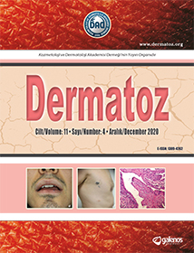
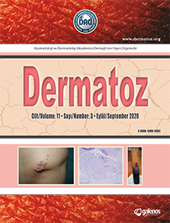
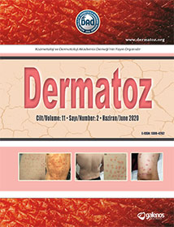
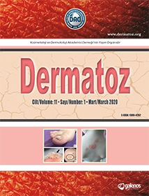
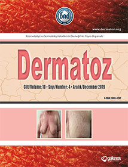
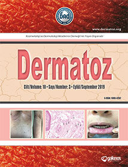
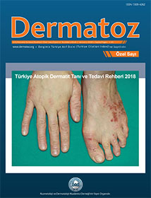
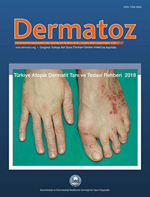

Cilt 11, Sayı 4
Aralık 2020
Cilt 11, Sayı 4
Dermatoz Dergisi'nin tüm sayılarını keşfedin. 2010'dan bu yana yayımlanan dermatoloji araştırmalarının kapsamlı arşivi.

Cilt 11, Sayı 4

Cilt 11, Sayı 3

Cilt 11, Sayı 2

Cilt 11, Sayı 1

Cilt 10, Sayı 4

Cilt 10, Sayı 3

Cilt 10, Sayı 2

Cilt 10, Sayı 1

Cilt 9, Sayı 4

Cilt 9, Sayı 3

Cilt 9, Sayı 2

Cilt 9, Sayı 1

Cilt 9, Sayı 1

Cilt 8, Sayı 4

Cilt 8, Sayı 3

Cilt 8, Sayı 2

Cilt 8, Sayı 1

Cilt 7, Sayı 4

Cilt 7, Sayı 3

Cilt 7, Sayı 2

Cilt 7, Sayı 1

Cilt 6, Sayı 4

Cilt 6, Sayı 3

Cilt 6, Sayı 2

Cilt 6, Sayı 1

Cilt 5, Sayı 4

Cilt 5, Sayı 3

Cilt 5, Sayı 2

Cilt 5, Sayı 1

Cilt 4, Sayı 4

Cilt 4, Sayı 3

Cilt 4, Sayı 2

Cilt 4, Sayı 1

Cilt 3, Sayı 4

Cilt 3, Sayı 3

Cilt 3, Sayı 2

Cilt 3, Sayı 1

Cilt 2, Sayı 4

Cilt 2, Sayı 3

Cilt 2, Sayı 2

Cilt 2, Sayı 1

Cilt 1, Sayı 4

Cilt 1, Sayı 3

Cilt 1, Sayı 2

Cilt 1, Sayı 1